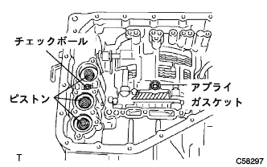
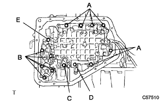
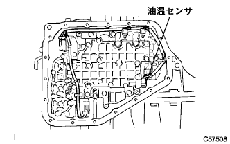

トランスミッションバルブボデーASSY（U441E） 取り付け |
| 1. トランスミッション バルブ ボデーASSY取り付け |
|  |
図の位置に、チェックボール、アプライガスケットおよび各ピストンが入っていることを確認する。
 |
マニュアルバルブのリンクを取り付け、バルブボデーASSYを取り付ける。
|  |
ボルト14本を均等に締め付ける。
| ボルト | 長さ(ｍｍ) |
|---|---|
| A | 20 |
| B | 28 |
| C | 49 |
| D | 36 |
| E | 40 |
|  |
各ソレノイドコネクターおよび油温センサを取り付ける。
| 2. バルブボデー オイルストレーナASSY取り付け |
 |
新品のガスケットをオイルストレーナに取り付ける。
ボルト3本でオイルストレーナを取り付ける。
| 3. トランスアクスル オイルパン ガスケット (ATM)取り付け |
新品のオイルパンガスケットをオイルパンに取り付ける。
| 4. オートマチックトランスアクスルオイル パンSUB-ASSY(ATM)取り付け |
 |
オイルクリーナマグネット2個を、図の位置に取り付ける。
 |
ボルト18本でオイルパンを取り付ける。
| 5. オートマチック トランスアクスルASSY取り付け |
参照)| 6. TaSCAN-AT学習値イニシャライズ |
SST(TａSCAN)を使用して、画面表示に従って操作を行い、メインメニューの[作業サポート]を選択し、作業サポート区分の[トランスミッション]を選択する。
画面表示の[AT学習値初期化]を選択し、AT学習値の初期化を行う。